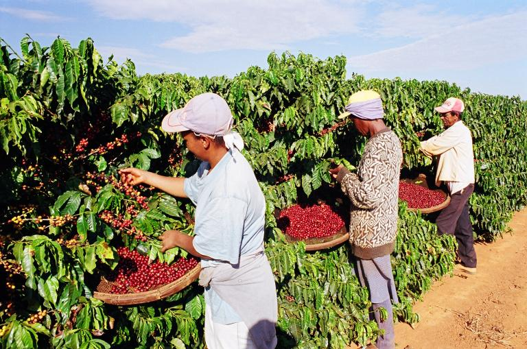

Como o café é cultivado
O cultivo começa muito antes da colheita. A escolha da área considera fatores como temperatura, altitude, regime de chuvas, tipo de solo, disponibilidade de água e variedade da planta. O planejamento adequado ajuda a manter o cafezal saudável e a obter frutos com boa qualidade.

Principais etapas do cultivo
- Planejamento e preparo do solo: análise da fertilidade, correção da acidez quando necessária e organização do terreno.
- Produção e plantio das mudas: escolha de mudas sadias e distribuição das plantas com espaçamento adequado.
- Manejo do cafezal: adubação, podas, controle de plantas daninhas e monitoramento de pragas e doenças.
- Florada e formação dos frutos: após a floração, os frutos se desenvolvem e passam por diferentes estágios de maturação.
- Colheita: pode ser manual, mecanizada ou combinar os dois métodos, conforme o terreno e a estrutura da propriedade.
Clima, solo e altitude
Temperatura, disponibilidade de água e características do solo interferem no crescimento das plantas. A altitude e a amplitude térmica também podem influenciar o ritmo de maturação e o perfil sensorial dos grãos. Não existe uma única condição ideal para todos os cafés: cada espécie e variedade responde de maneira diferente ao ambiente.
Pós-colheita e sustentabilidade
Depois de colhidos, os frutos são selecionados e encaminhados para o processamento e a secagem. O manejo correto da água, a conservação do solo, a proteção da biodiversidade e o destino adequado dos resíduos ajudam a reduzir impactos ambientais e a fortalecer a atividade no longo prazo.